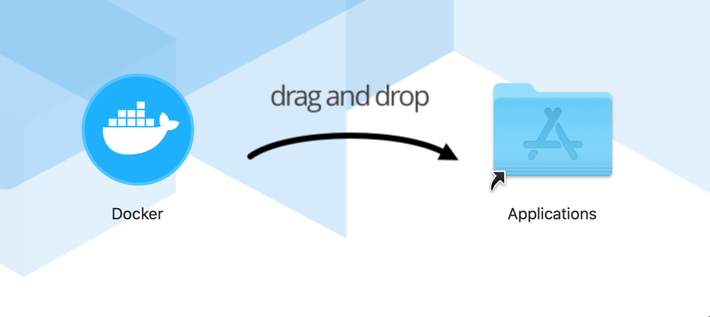

Step 1 − Install Docker.
Step 2 − Create a docker image with java installation if it is not already in your base image. In my case, my base image is tensorflow 2 with GPU and Python 3.
# Dockerfile for tensorflow 2 with gpu
FROM tensorflow/tensorflow:latest-gpu-py3
# Install OpenJDK-8
RUN apt-get update && \
apt-get install -y openjdk-8-jdk && \
apt-get install -y ant && \
apt-get clean;
# Fix certificate issues
RUN apt-get update && \
apt-get install ca-certificates-java && \
apt-get clean && \
update-ca-certificates -f;
# Setup JAVA_HOME -- useful for docker commandline
ENV JAVA_HOME /usr/lib/jvm/java-8-openjdk-amd64/
RUN export JAVA_HOME
# build your custom image using the following command
docker build -t myimage .
Step 3 − Run docker image interactively with volume mounting to the location of your PyCharm installation:
docker run
-it #Make docker session interactive
--rm #Automatically remove the container when it exits
--gpus all #Enable GPU support in the container
-e DISPLAY=${DISPLAY} #Pass environment variable display
--net=host #Share network configu of the host with this container
--user "$(id -u):$(id -g)" #Pass user id and group id
-v : #Volume mounting to access pycharm from the container
myimage
Source: Tutorial point, Docker